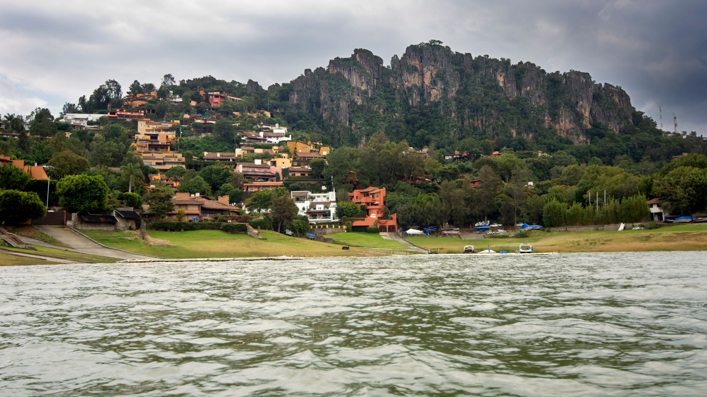
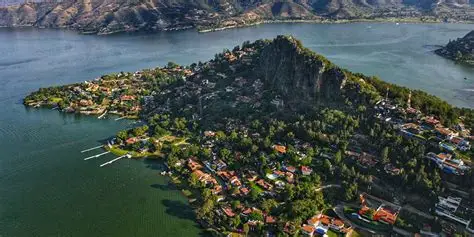
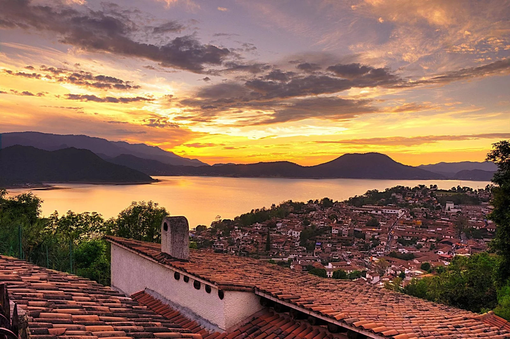

LA NATURALEZA NO TIENE PRISA, Y AUN ASI TODO FLORECE.
"VALLE DE BRAVO ES UNA CIUDAD MEXICANA DEL ESTADO DE MEXICO, UBICADA AL SUROESTE DE LA CIUDAD DE MEXICO."
SU FUNCION HISPANICA FUE EN 1530 POR FRAILES FRANCISCANOS. RECIBE SU NOMBRE POR SAN FRACISCO DEL VALLE Y POR EL GENERAL NICOLAS BRAVO.
LA ECONOMIA DE LA LOCALIDAD DEPENDE DEL TURISMO, YA QUE RECIBE TURISTAS NACIONALES Y EXTRANJEROS TODO EL AÑO; ADEMAS UNA PEQUEÑA CIUDAD ADMINISTRATIVA.

CUENTA CON UN EMBALSE POR LA PRESA MIGUEL ALEMAN, POPULARMENTE LLAMADA "LA LAGUNA" O "EL LAGO".
ESTA PRESA, QUE OCUPA EL TERRITORIO DONDE ESTUBO LA PLANICIE DEL VALLE Y PARTE DEL ANTIGUO PUBLO."

"AL SER UN ATRACTIVO TURISTICO DONDE SE REALIZAN DEPORTES EXTRAMOS, EL CONJUNTO DEL PUEBLO ESTILO COLONIAL Y SU UBICACION EN LO ALTO DE LAS MONTAÑAS, CONFORMA UNA ARMONIA ECOCISTEMATICA QUE PROVEE UN DELEITE ESTETICO A SUS VISITANTES."
"LA PEÑA: PIEDRA GIGANTE ARRIBA DEL LAGO, SUBES 20 MINUTOS CAMINANDO Y VEZ TODO EL PUEBLO DESDE ARRIBA"
"FUE NOMBRADO PUEBLO MAGICO EL 2005 Y SE HIZO FAMOSO DESPUES DE 1955 CUANDO SE CONSTRUYO LA PRESA"
"SE DICE QUE DEBAJO DE LA PRESA AY UN PUBLO COMPLETO INUNDADO, EL MANANTIAL. CUANDO BAJA MUCHO EL NIVEL DEL AGUA EN ABRIL Y MAYO, SE VEN LAS CRUCES DE LA IGLESIA VIEJA".

"LA ZONA ESTABA OCUPADO POR MATLATZINCAS, UN PUEBLO ORIGINARIO DEL ESTADO DE MEXICO QUE PAGABA TRIBUTO A LOS MEXICAS PERO SE MANTENIA COMO TERRITORIO AUTONOMO. ERA UN CENTRO DE COMERCIO IMPORTANTE ENTRE EL VALLE DE TOLUCA Y TIERRA CALIENTE."
"LA PRUEBA ESTA EN LA PEÑA, EL CERRO QUE ESTA EN LA ENTRADA DE VALLE. AHY ENCONTRARO ESCULTURAS, ENTIERROS, OFRENDAS Y LOS ARQUEOLOGOAS ASEGURAN QUE HAY VESTIGIOS PREHISPANICOS HASTA DEBAJO DEL LAGO".